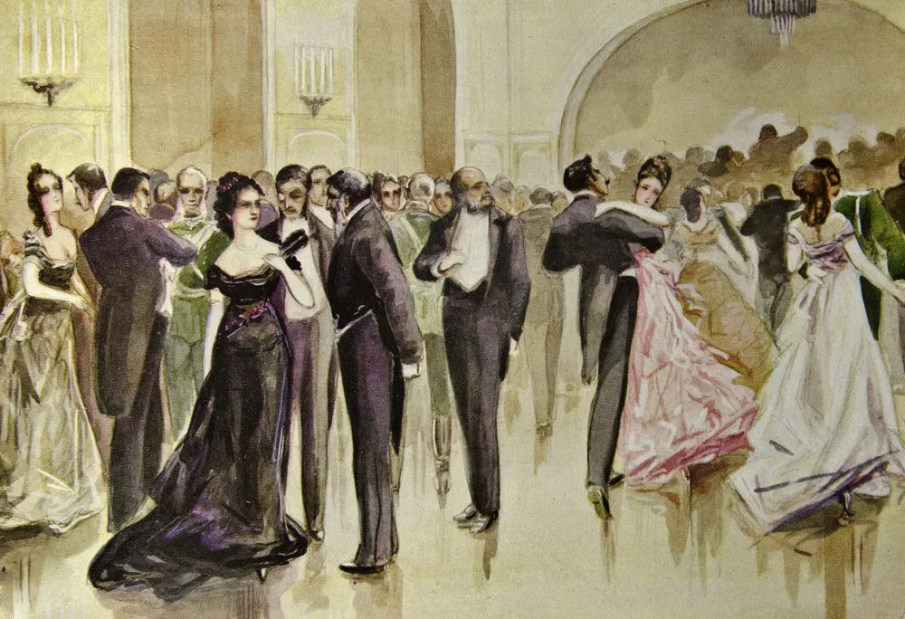
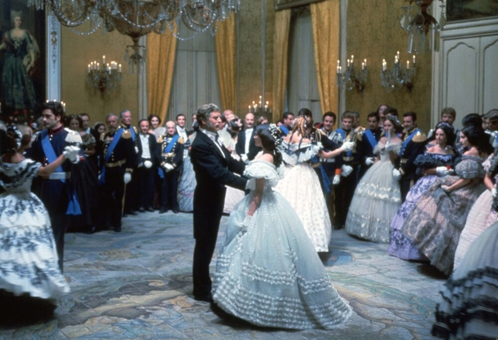
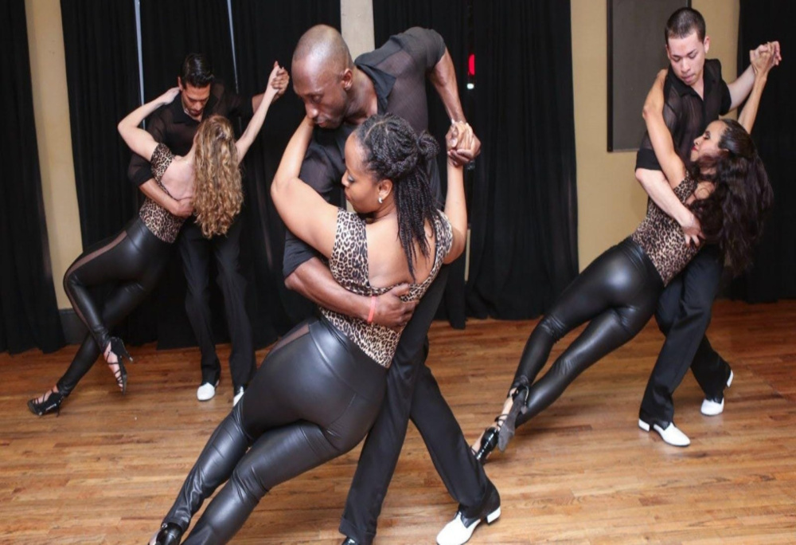
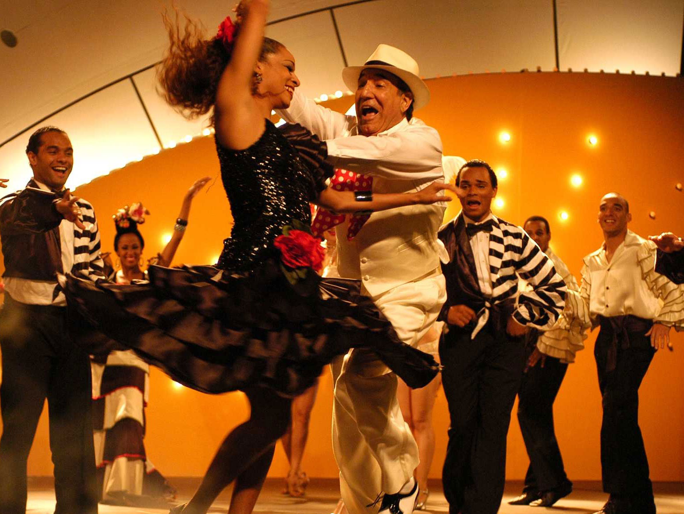
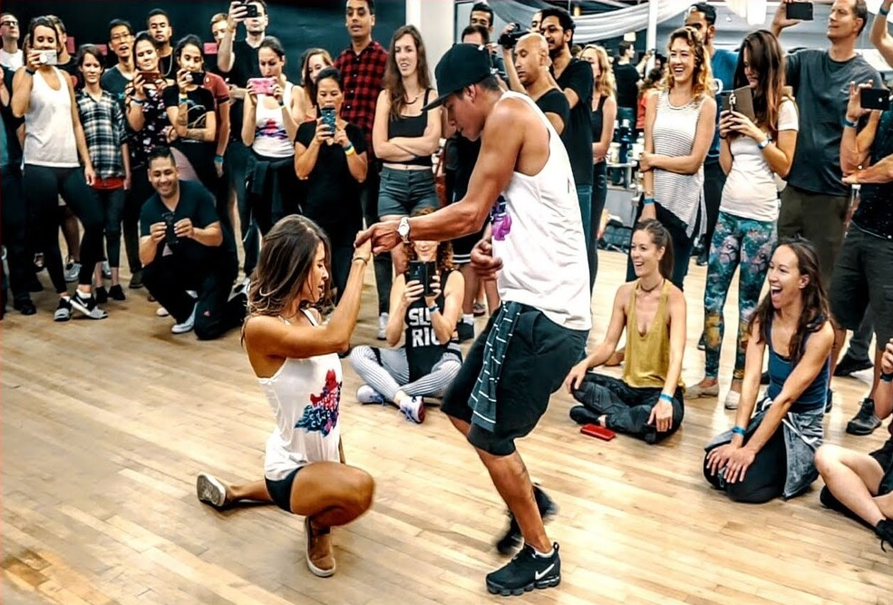

A História da Dança de Salão: Da Nobreza às Pistas
A história da dança de salão é um reflexo das transformações culturais, sociais e artísticas que moldaram a humanidade ao longo dos séculos. Embora hoje seja amplamente reconhecida como uma prática recreativa, social e competitiva, suas origens remontam às cortes europeias dos séculos XV e XVI, onde a nobreza dançava minueto e pavana como símbolo de status e refinamento. Com o passar do tempo, a dança de salão evoluiu, atravessando fronteiras e incorporando novas influências.
No século XIX, a Revolução da Valsa marcou uma transformação significativa. Esse estilo ousado aproximou os parceiros de forma inédita, provocando debates na sociedade conservadora da época, mas também dando início a uma era mais acessível e romântica para a dança.
Com a chegada do século XX, a dança expandiu-se para as Américas, onde foi profundamente influenciada pela diversidade cultural. Estilos como o foxtrote e o swing emergiram nos Estados Unidos, enquanto a Influência Latino-Americana trouxe paixão e intensidade com ritmos como o tango e a rumba, integrando uma riqueza de movimentos e histórias culturais.
Atualmente, a dança de salão é celebrada mundialmente, tanto em competições quanto em contextos sociais. Seu papel continua a evoluir, mas suas raízes históricas permanecem vivas, conectando pessoas, culturas e gerações. Exploraremos os cinco grandes marcos que definem sua trajetória.
Origens na Europa
A dança de salão teve suas primeiras manifestações nas cortes europeias dos séculos XV e XVI. Nessas ocasiões, a nobreza usava as danças como forma de entretenimento e demonstração de status social. Estilos como o minueto e a pavana destacavam a elegância e o controle dos movimentos, refletindo a formalidade da época. Esses eventos eram cuidadosamente coreografados e realizados em grandes salões, sempre acompanhados por música ao vivo. Era um período em que a dança possuía um significado simbólico, representando a hierarquia e os valores da aristocracia.
Revolução da Valsa
No século XIX, a dança de salão passou por uma revolução com o surgimento da valsa. Diferente das danças anteriores, que mantinham os pares a uma certa distância, a valsa introduziu a proximidade entre os parceiros em uma posição fechada. Essa mudança provocou controvérsias, já que muitos consideravam a dança muito ousada para os padrões da época. Contudo, ela conquistou popularidade rapidamente, primeiro na Áustria e na Alemanha, e depois em toda a Europa. A valsa também trouxe um novo dinamismo, com movimentos fluidos e giros contínuos, marcando o início de uma era mais acessível e romântica para a dança de salão.
Expansão para as Américas
Com o fluxo de imigrantes europeus para as Américas no final do século XIX e início do século XX, a dança de salão ganhou novos contornos. Nos Estados Unidos, surgiram estilos como o foxtrote e o quickstep, que refletiam o otimismo e a energia das cidades em expansão. Durante a década de 1920, o swing, inspirado pelo jazz, tornou-se uma febre, trazendo movimentos vibrantes e descontraídos que contrastavam com a formalidade europeia. Essa expansão também viu a integração de estilos populares e culturais, tornando a dança de salão mais diversa e conectada ao contexto social das grandes metrópoles.
Influência Latino-Americana
O século XX trouxe uma contribuição significativa da América Latina à dança de salão. Estilos como o tango, originado nos bairros populares de Buenos Aires e Montevidéu, e a rumba, fortemente influenciada pela música cubana, adicionaram paixão, intensidade e sensualidade à dança. Posteriormente, danças como a salsa e o samba também se tornaram parte do repertório de dança de salão, enriquecendo-o com ritmos mais energéticos e vibrantes. Essas danças, marcadas por movimentos corporais expressivos e histórias culturais profundas, ajudaram a internacionalizar a dança de salão e conectá-la a tradições diversas.
A Dança de Salão Hoje
Atualmente, a dança de salão continua evoluindo e ocupando um lugar importante na cultura global. Ela é praticada tanto como um esporte competitivo, com campeonatos internacionais que atraem milhares de dançarinos e espectadores, quanto como uma atividade social que promove a interação e o bem-estar. As escolas de dança em todo o mundo ensinam desde os estilos tradicionais até os mais modernos, adaptando a dança de salão a diferentes gerações e culturas. Sua popularidade também é alimentada por sua presença na mídia, como em filmes, shows e competições televisivas, consolidando seu status como uma forma de arte universal e atemporal.